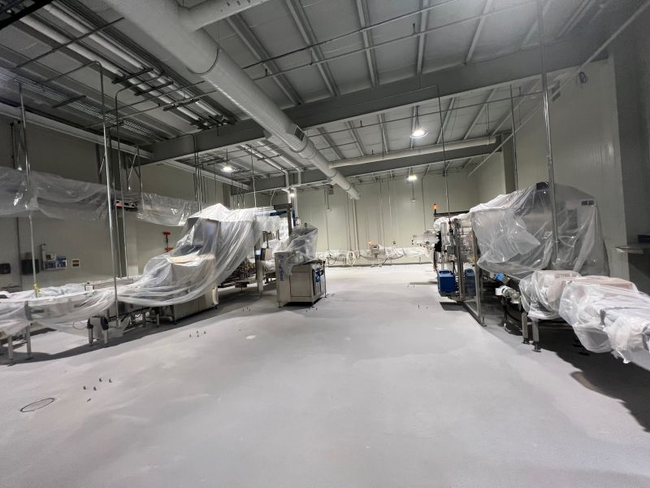

Monday mornings hit different with a good cup of coffee. They hit even better when the floor underneath the production line is built to last.

We recently installed 3/8" SaniCrete SL cementitious urethane with a broadcast to rejection finish at a coffee processing facility. The result: a bright, seamless, USDA-compliant floor engineered to handle everything the production environment throws at it.
Why SaniCrete SL for Coffee Processing?
Coffee processing facilities deal with a unique combination of challenges — hot liquids, organic acids, constant washdowns, and heavy equipment traffic. SaniCrete SL is designed for exactly this kind of environment:
- Self-leveling application — creates a smooth, seamless surface with no joints or crevices for bacteria to hide
- Broadcast to rejection finish — quartz aggregate broadcast provides slip resistance and a durable wear surface
- Chemical resistance — stands up to organic acids, cleaning chemicals, and hot washdowns
- Thermal shock resistance — handles temperature swings from hot processing to cold washdown without cracking
- USDA/FDA compliant — meets the sanitary standards required for food and beverage production
From Raw Beans to Finished Product
Every step of the coffee production process — from receiving raw beans to roasting, grinding, packaging, and shipping — happens on this floor. It needs to perform under every condition the facility sees, day in and day out. SaniCrete SL delivers that performance with a surface that's easy to clean, easy to maintain, and built to last for decades.
Products Used
- SaniCrete SL — 3/8" self-leveling cementitious urethane with broadcast to rejection finish